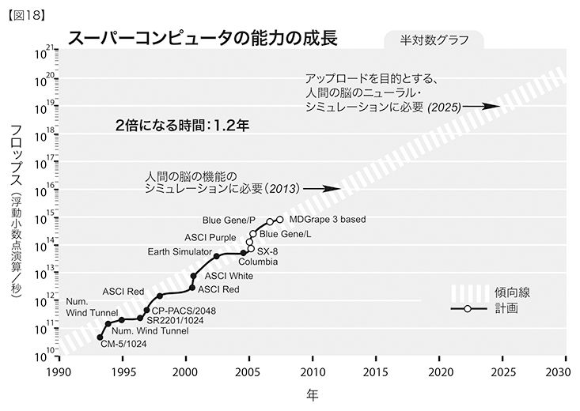
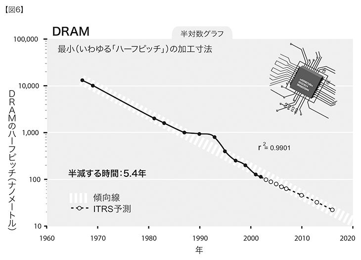
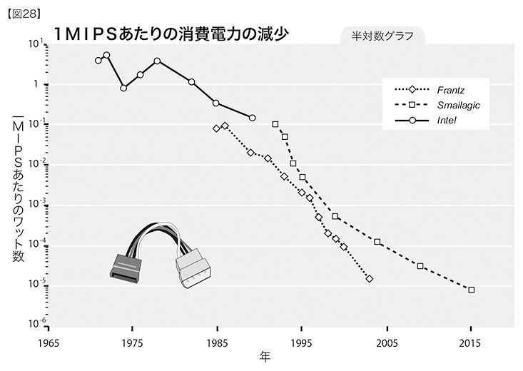
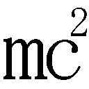

『創造する機械（Engines of Creation）』〔相澤益男訳／パーソナルメディア〕で論じたように、本物のＡＩを作ることができるのなら、百万倍も速いニューロンなどを作ることも可能だと考えるのは妥当だろう。すると、人間よりも百万倍も速く考えるシステムを作ることができる、という結論になる。ＡＩを用いることで、このシステムは、工学設計をすることができるだろう。さらに、システムがそれ自身よりも優れたものを作ることができる能力を合わせると、急激な転換が起こる可能性がある。こうした状態に対処するのは、ナノテクノロジーにたいするよりも困難かもしれないが、さらに難しいのは、今の時点でこのことについて建設的に考えることだ。そのために、これについては折にふれて、「この点も重要だ」と言ってきただけなのだ。
──エリック・ドレクスラー 一九八九年
──三次元分子コンピューティングと新たなコンピューティング・テクノロジー
一九六五年四月一九日、「エレクトロニクス」誌上でゴードン・ムーアがこう書いた。「集積電子工学の未来は、電子工学の未来そのものである。集積化の進展によって電子工学が普及し、多数の新しい分野に浸透していくことになる001」ムーアは、この控えめな言葉で革命の到来を告げた。その勢いは、いまだ失われていない。この新しい科学がいかに奥が深いかを読者に理解させるために、ムーアは次のような予測を立てた。「一九七五年までに、経済的な要請により、ひとつのシリコンチップ上に、六万五〇〇〇個もの素子を詰め込むことになるだろう」これはちょっとすごい。
ムーアの記事ではさらに、集積回路に搭載されるトランジスタ（コンピューティング素子やゲートに用いられる）の数が毎年二倍になる、と書かれている。この一九六五年に立てられた「ムーアの法則」と呼ばれる予測は、その当時には批判をされた。チップ上の素子数を示す対数グラフには実績値を表す点が五つしかプロットされておらず（一九五九年から一九六五年）、未発達の傾向の予測を一九七五年にまで引き伸ばすのは時期尚早と考えられたからだ。ムーアの最初の見積もりは不正確で、ムーア自身が一〇年後に予測を下方に修正した。それでも、基本的なアイデア──集積回路上のトランジスタのサイズが縮小することで電子工学のコストパフォーマンスが指数関数的に成長する──は、正当で先見の明のあるものだった002。
今日語られる素子の数は、何千ではなく何十億だ。二〇〇四年の最先端のチップでは、論理ゲートの幅はわずか五〇ナノメートル。すでに十分にナノテクノロジーの領域内だ（一〇〇ナノメートル以下の寸法を扱うものがナノテクノロジー）。ムーアの法則の終焉がつねにささやかれているが、このすばらしいパラダイムの終わりは、いつも先送りにされている。インテル社のフェローで技術戦略部長、なおかつ、大きな影響力をもつ国際半導体技術ロードマップ（ＩＴＲＳ）の委員長でもあるパオロ・ガルジーニは、先ごろこのように発言した。「少なくとも今後一五年から二〇年は、ムーアの法則に従うことができるだろう。実際……ナノテクノロジーのおかげで新たな方策がたくさん生まれ、チップ上の素子数を増やし続けることができている003」
コンピューティングの加速化によって、本書で明らかにしていくように、社会的経済的な関係から、政治制度に至るまで、あらゆることが変容した。だが、加工寸法を縮小する戦略が、コンピューティングやコミュニケーションの指数関数的成長をもたらした第一のパラダイムであるとは、ムーアの論文は言っていない。これは第五のパラダイムであり、そのうえ、次のパラダイムの輪郭もすでに見え始めている。分子レベルの三次元コンピューティングがそうだ。第五のパラダイムが終わるまでにはまだ一〇年以上もあるが、第六のパラダイムを実現するのに必要なテクノロジーは、すでに活発な進展をとげつつある。次節「人間の脳のコンピューティング能力」では、人間の知能レベルに到達するために必要なコンピューティングとメモリの量を分析し、二〇年以内に廉価なコンピュータで、その水準に到達できると自信をもって言える理由を述べる。だが、ひじょうに強力なコンピュータも最適なツールとは言いがたい。本章の最終節「コンピューティングの限界」では、今日理解されている物理の法則に従い、コンピューティングの限界を検討してみる。そこで、二一世紀の終わりごろのコンピュータについても触れるつもりだ。
３Ｄ分子コンピューティングに至る道 この新たな次元への架け橋となる研究は、すでに着手されている。三次元分子コンピューティングという第六のパラダイムにつながる新テクノロジーには、ナノチューブとナノチューブ回路や、分子コンピューティング、ナノチューブ回路における自己集合、回路機構を模倣する生物学的システム、ＤＮＡコンピューティング、スピントロニクス（電子のスピンを用いたコンピューティング）、光コンピューティング、量子コンピューティングなどがある。これらの独立したテクノロジーの多くは、コンピューティングのシステムへと統合され、やがて、理論上の最大値まで物質とエネルギーを利用しながらコンピューティングを行い、人間の脳のコンピューティング能力をはるかに超えることになるだろう。
そこに至る方法のひとつに、「伝統的」なシリコンリソグラフィを用いて三次元回路を構築するものがある。マトリックスセミコンダクタ社〔二〇〇六年一月、サンディスク社に買収された〕がすでに、一層ではなく、垂直に積み上げられたトランジスタ層をもつメモリチップを売り出している004。３Ｄチップではメモリ容量が大きくなるので、製品全体のサイズは小さくなる。そこで、マトリックス社は、まずは携帯電子機器に狙いを定め、フラッシュメモリを追い落とそうとしている（フラッシュメモリは、電源を切っても情報が失われないために、携帯電話やデジタルカメラに使われている）。積み重ね方式の回路では、ビットあたりの全体のコストも減少する。マトリックス社に対抗して、元東芝の技術者でフラッシュメモリを発明した舛岡富士雄が別の取り組みを進めている。舛岡氏は、シリンダ状というこれまでにない形にメモリを設計することによって、サイズと、メモリ一ビットあたりのコストを平坦なチップの一〇分の一ほどに減少できると主張している005。三次元シリコンチップの実用試作品も、レンセラー・ポリテクニック・インスティテュートのギガスケール・インテグレーション・センターと、ＭＩＴメディアラボに展示されている。
日本電信電話（ＮＴＴ）は、電子ビームリソグラフィを用いたすばらしい３Ｄテクノロジーを披露した。この技術では、加工寸法が最小一〇ナノメートルという、任意の三次元構造（トランジスタなど）を作りだせる006。ＮＴＴは、このテクノロジーを実際に使って、加工寸法が一〇ナノメートル、サイズが六〇ミクロンの、高解像度の地球儀を作成した。このテクノロジーは、半導体などの電子デバイスのナノ製造や、ナノスケールの機械システムに適用できる、とＮＴＴは主張している。
ナノチューブがいまだに最有力 わたしは『スピリチュアル・マシーン』に、三次元分子コンピューティングの時代を切り開く可能性のもっとも高いテクノロジーは、ナノチューブだと書いた。ナノチューブとは、分子を三次元に組織したもので、メモリビットを蓄え、論理ゲートとして作動する。一九九一年に初めて合成されたナノチューブは、炭素原子が六角形のネットワーク状に連なって円筒形に巻き上がり、継ぎ目のないシリンダの形になっている007。ナノチューブは非常に小さい。単層のナノチューブは、直径がわずか一ナノメートルであるため、密度がとても高くなる。
さらに、非常に速いクロック周波数をもつ可能性がある。カリフォルニア大学アーヴァイン校のピーター・バークらは、先ごろ、ナノチューブ回路が二・五ギガヘルツで作動するのを実証した。しかし、米国化学会が発行する相互査読機関誌「ナノ・レターズ」で、バークは、こうしたナノチューブ・トランジスタの理論的な限界速度は「テラヘルツ［一テラヘルツ＝一〇〇〇ギガヘルツ］であり、現在のコンピュータの速度より約一〇〇〇倍も速い」と述べている008。一立方インチのナノチューブ回路の開発が完成すれば、人間の脳より一億倍も強力になるだろう009。
ナノチューブ回路は、わたしが一九九九年に論じたときにはまだ論議を呼んでいたが、この六年の間に技術が劇的に進歩した。二つの大きな進展が二〇〇一年に見られた。二〇〇一年七月六日の「サイエンス」誌に、オンとオフの状態の切り換えをたったひとつの電子が行い、室温で作動するナノチューブベースのトランジスタ（一×二〇ナノメートルの寸法）が報告された010。同じころ、ＩＢＭが、ナノチューブベースのトランジスタ一〇〇〇個を積んだ集積回路を発表している011。
さらに最近では、ナノチューブベースの回路の実用モデルが登場した。二〇〇四年一月、カリフォルニア大学バークレー校とスタンフォード大学の研究者らが、ナノチューブベースの集積メモリ回路を作製した012。作製する際の問題点のひとつに、ナノチューブには伝導性のものもあれば（電気を単に通す）、半導体のように振る舞うものもある（スイッチの切り換えができ、論理ゲートを実現できる）、ということがある。性能の違いは、微妙な構造の特性による。つい最近までは、この二種類のものを区分けするのは人の手に頼るしかなく、大規模な回路を製造するには現実的ではなかった。バークレーとスタンフォードの研究者らは、この問題に取り組み、非半導体のナノチューブを分類して排除する全自動の手法を開発した。
ナノチューブ回路のもうひとつの課題は、きちんと整列をさせることだ。ナノチューブは、ばらばらの方向を向いて成長する傾向がある。二〇〇一年、ＩＢＭは、ナノチューブ・トランジスタを、シリコン・トランジスタのように大量に製造できることを実証した。これには「建設的な破壊」というプロセスが用いられた。ナノチューブの欠陥品を、人の手で取り除くのではなくウェーハ上で破壊するという手法だ。ＩＢＭワトソン研究所物理科学部門のトマス・タイス部長は、当時こう語った。「ＩＢＭは、分子スケールのチップに向かうための重要なマイルストーンを通過しました。……最終的に成功すれば、カーボンナノチューブのおかげで、密度という観点ではムーアの法則をどこまででも維持することができるようになります。将来のどのようなシリコン・トランジスタよりも、ナノチューブのほうが小さくできると確信していますから013」二〇〇三年五月には、ハーヴァード大学の研究者トーマス・リューケスらが設立した、マサチューセッツ州ウォーバーンにある小さな企業、ナンテロ社が、さらに一歩前進した。ひとつのチップのウェーハ上に、一〇〇億のナノチューブ接合物を載せ、全てを正しい方向に整列させたのだ。ナンテロ社のテクノロジーでは、標準的なリソグラフィ（光学的焼きつけ）装置を用いて、間違った向きに並んだナノチューブを自動的に取り除く方法がとられている。標準的な装置が使用されたことに、業界はどよめいた。これなら、高価な新しい製造機械がいらないからだ。ナンテロ社の設計では、ランダムアクセスが可能で、不揮発性（電源を切った後もデータが保存される）が実現されている。これは、ＲＡＭ、フラッシュメモリ、ディスクなど、メモリの主だった形式の全てに取って代わる可能性があるということだ。
分子でコンピューティングする ナノチューブの他にも、一個から数個の分子を用いたコンピューティングにおいて、近年、大きな進歩が見られた。分子コンピューティングのアイデアは、一九七〇年代初期、ＩＢＭのアヴィ・アヴィラムとノースウェスタン大学のマーク・Ａ・ラトナーによって初めて提唱された014。しかし当時は、これを可能にするテクノロジーがなかった。アイデアを実現に向けて前進させるには、電子工学と、物理学、化学が同時に進展し、さらには、生体プロセスのリバースエンジニアリングが必要だったのだ。
二〇〇二年、ウィスコンシン大学とバーゼル大学の科学者らが、原子を用いてハードドライブを模倣する「原子メモリドライブ」を作った。走査型トンネル顕微鏡を用いれば、二〇個のシリコン原子の塊に、一個のシリコン原子を加えたり、取り除いたりすることができる。このプロセスを利用すれば、同様の仕組みを用いて、今と同等の大きさのディスクに、一〇〇万倍以上のデータを保存することができると研究者らは考えた。一平方インチあたり約二五〇テラビット（2.5×10の14乗ビット）のデータ密度になる。ただし、実験では、ごく小さなビット数しか実現できなかった015。
分子回路が一テラヘルツの速度をもつ、というピーター・バークの予測が、にわかに正しく見えてきた。というのも、イリノイ大学アーバナ・シャンペーン校において、ナノスケールのトランジスタが製作されたからだ。しかもそれは、六〇四ギガヘルツ（二分の一テラヘルツより大きい）のクロック周波数で作動する016。
コンピューティングに適した性質をもつことが明らかになった「ロタキサン」と呼ばれる種類の分子がある。ロタキサンは、分子中にある環状の構造内のエネルギーレベルを変えることで、状態のスイッチを切り換えることができる。ロタキサンのメモリと電子スイッチ装置が実際に操作され、一平方インチあたり一〇〇ギガビット（10の11乗ビット）を保存できる可能性のあることが示された。三次元の装置が作られれば、この可能性はさらに増すことになる。
自己集合 ナノスケールの回路の自己集合は、効果的なナノエレクトロニクスを実現するもうひとつの鍵となるものだ。自己集合ができれば、適切に形成されなかった部品が自動的に取り除かれ、うまくいけば何兆もの回路部品が、トップダウンのプロセスで苦労して組み立てられるのではなく、自力でボトムアップに組織化することが可能になるかもしれない。そうなれば、何十億ドルも投資した工場ではなく試験管の中で、しかも、リソグラフィではなく化学的な手法を用いて、大規模な回路の製作が可能になるだろう、とＵＣＬＡの科学者らは述べている017。パデュー大学の研究者らは、すでに、ＤＮＡの二本の鎖が安定した構造でつながるのと同じ原理を用いて、ナノチューブ構造が自己組織化することを実証している018。
二〇〇四年六月には、ハーヴァード大学の科学者らが大きな成果をあげた。大規模回路に利用できる、新たな自己組織化の手法を実現したのだ019。この技術では、フォトリソグラフィを用いて、相互接続（コンピューティング素子の間を接続するもの）の配列をエッチングする。ナノワイヤーの電界効果トランジスタ（トランジスタの一般的な形式）と、ナノスケールの相互接続を、配列の上に置く。すると、これらの部品は互いに正しいパターンで接続する。
二〇〇四年、南カリフォルニア大学とＮＡＳＡのエイムズ研究所の研究者らが、非常に高密度な回路を化学溶液の中で自己組織化させる手法を実現した020。この技術により、ナノワイヤーが自発的に生成され、その上に、それぞれ三ビットのデータを保存できるナノスケールのメモリセルが自己集合する。このテクノロジーでの記憶容量は、一平方インチあたり二五八ギガビットで（これも一〇倍になりうると研究者らは主張している）、たいするフラッシュメモリカードは六・五ギガビットだ。また、ＩＢＭが二〇〇三年に、幅二〇ナノメートルの六角形構造に自己集合する重合体を用いて、実用的な記憶装置を作っている021。
もうひとつ重要なのが、ナノ回路は自己配列できなければならない、という点だ。回路の部品点数が大量になることと、部品が壊れやすい性質をもつことから（サイズが小さいため）、回路のある部分が正しく動作しないという事態が生じるのは避けられない。一兆個のトランジスタのうちごくわずかな個数が動作しないからといって、回路全体を廃棄するのは経済的に見合わない。この懸念を解決するには、未来の回路が、自身の動作を継続的に監視して、インターネット上の情報のやりとりが作動していないノード〔サーバやパソコンなどネットワークに接続される機器〕を回避するのと同じように、信頼できない部分を避けて情報を流すようにすればよい。ＩＢＭはこの分野の研究に特に熱心で、自動的に問題を診断し、それに応じてチップのリソースを再配列するマイクロプロセッサの設計をすでに行っている022。
生物を模倣する 自己複製と自己組織化をする電子的もしくは機械的なシステムを構築するというアイデアは、生物からヒントを得たものだ。生物は、自己複製と自己組織化の特性によって存続している。「全米科学アカデミー会報」に発表された研究には、自己複製タンパク質であるプリオンをベースとした自己複製ナノワイヤーの構築が説明されている023（第四章でくわしく述べるように、プリオンのある形態は人間の記憶を助ける働きをするらしいが、別の形態は、ＢＳＥやそのヒト版、クロイツフェルト・ヤコブ病の多様な型の原因となると考えられている）。このプロジェクトを推進している研究チームがプリオンを使ったのは、その強い性質のためだ。しかし、プリオンは通常では電気を通さないため、彼らは、遺伝子組み換えにより薄い金の層を含んだプリオンを作った。これなら、低い抵抗で電気を通す。この研究チームを率いたＭＩＴの生物学教授、スーザン・リンドクィストは、こう述べている。「ナノ回路を作る人のほとんどは、『トップダウン』方式の製作技術で回路を構築しようとしています。わたしたちは、『ボトムアップ』方式でいってみて、分子に自己集合させ、分子自身で難しい仕事をこなすようにしてみよう、と考えたのです」
生物にある究極の自己複製分子といえば、もちろんＤＮＡだ。デューク大学の研究者らが、自己集合したＤＮＡ分子を使って分子の建築材を開発し、「タイル」と名づけた024。彼らは、その結果できた集合体の構造をコントロールして、「ナノグリッド」を作ることに成功した。この技術では、ナノグリッドの各々のセルにタンパク質分子が自動的に付着し、それらの分子をコンピューティング操作に用いる。さらに、ＤＮＡのナノリボンを銀で覆い、ナノワイヤーを生成する化学プロセスも実証した。「サイエンス」誌二〇〇三年九月二六日号に掲載された論文について、研究チームリーダーのハオ・ヤンはこうコメントしている。「ＤＮＡの自己集合を利用してタンパク質分子や他の分子の鋳型をとることは長年研究されてきたが、それがこれほどはっきりと実証されたのは今回が初めてだ025」
ＤＮＡコンピューティング ＤＮＡは自然が作りだしたナノ工学コンピュータで、分子レベルで情報を保存し論理演算を行うその能力は、特殊な「ＤＮＡコンピュータ」ですでに活用されている。ＤＮＡコンピュータとは、じつは、水で満たされた試験管の中にＤＮＡ分子を数兆個入れ、各々の分子がコンピュータとして振る舞うものだ。
コンピューティングの目的は、問題を解決することだ。その解答は、記号の配列として表される（たとえば、記号の配列は、数学の証明を表すこともあれば、単なる何桁かの数字を表すこともある）。ＤＮＡコンピュータは次のように作動する。短いＤＮＡの鎖を作り、ひとつの遺伝コードにひとつの記号を割り当てる。これらの鎖一本一本を、「ポリメラーゼ連鎖反応」（ＰＣＲ）と呼ばれるプロセスを用いて、何兆倍にも複製する。こうしてできたＤＮＡの液体を、試験管に入れる。ＤＮＡには鎖同士がつながる親和性があるため、自動的に長い鎖が形成され、鎖の配列がそれぞれに異なる記号を表し、そのひとつひとつが問題のありうる解答となる。鎖は何兆本もあるので、ありうるひとつの解答（ありうるひとつの記号の配列）を示す鎖は複数ある。
次のステップは、全ての鎖を同時に検査する、というプロセスだ。これには、ある基準に合致しない鎖を破壊するように特別に設計された酵素を用いる。試験管に酵素を順に加えていく。一連の正しい酵素を設計すれば、酵素を加えていくことで、間違った鎖は全て消去され、正しい解答の鎖だけが残る（くわしいプロセスの説明は026を参照）。
ＤＮＡコンピューティングの威力の鍵となるのが、何兆本もの鎖をそれぞれ同時に検査するのが可能であることだ。二〇〇三年、ワイツマン科学研究所のエフド・シャピロが率いるイスラエルの研究チームが、ＤＮＡとアデノシン三燐酸（ＡＴＰ）とを結合させた027。ＡＴＰとは、人体などの生物システムの自然燃料となるものだ。こうすれば、各々のＤＮＡ分子は、それ自身でエネルギーを供給しながらコンピューティングを実行することができる。ワイツマン研究所のメンバーは、この液体のスーパーコンピューティングシステムをスプーン二杯用いた装置を実際に作ってみせた。この中には、三〇〇〇万×一〇億個の分子コンピュータが含まれ、毎秒合計六六〇兆回の計算を行う（6.6×10の14乗cps）。これらのコンピュータのエネルギー消費量はひじょうに少ない。三〇〇〇万×一〇億個全て合わせても、五〇〇〇万分の一ワットしか消費しない。
しかし、ＤＮＡコンピューティングにも限界はある。何兆個ものコンピュータそれぞれが、同時に同じ操作をしなければならない（データは違っても）。そのため、この装置のアーキテクチャ（設計思想）は「単一命令マルチデータ」（ＳＩＭＤ）になる。ＳＩＭＤシステムになじみやすい重要な種類の問題もあるが（たとえば、画質の向上や圧縮のために画像の全てのピクセルを処理する、あるいは、組み合わせ論理の問題を解くなど）、それらを、汎用アルゴリズム向けにプログラムし、各々のコンピュータが、その固有の命令を果たすために必要などんな演算も行うことができるようにするのは不可能だ（前に紹介した、自己集合型のＤＮＡの鎖を用いて三次元構造を作るパデュー大学とデューク大学の研究プロジェクトは、ここで説明したＤＮＡコンピューティングとは異なることに注意。この二つの大学の研究プロジェクトでは、ＳＩＭＤコンピューティングに限定されない任意の設定を作ることができる）。
スピンでコンピューティングする 電子には、負の電荷だけではなく、メモリやコンピューティングに利用できるような特性がもうひとつある。それがスピンだ。量子力学によれば、地球が地軸を中心に自転しているのと同様に、電子も軸を中心にスピンしている。ただし、この概念は理論的なものだ。なぜなら、電子は空間内の一点を占めるだけと考えられ、大きさのない点でありながらスピンする、というのは想像がつきにくいだからだ。しかし、電荷が移動すると磁場が形成されるということなら、実体を伴うし、計測可能だ。電子は、「上」か「下」の二つの方向のうちのどちらかでスピンする。この特性は、論理スイッチや、一ビットのメモリを符号化するのに利用できる。
スピントロニクスのすばらしい特性は、電子のスピン状態を変化させるのにエネルギーを必要としない、という点だ。スタンフォード大学物理学教授のショウチャン・チャンと東京大学の永長直人教授はこう語る。「われわれは、『オームの法則』に相当する新法則を発見した。……それによると、電子のスピンは、エネルギーを消失あるいは散逸することなく変換が行われる。さらに、この効果は、室温にて、半導体産業ですでに広く用いられているガリウム砒素などの材料内で発生する。これは、次世代のコンピューティング装置を可能にするという点でとても重要だ028」
となると、超伝導（つまり、光の速さかそれに近い速さで情報を動かしながら、情報の損失がないこと）の効率を室温で達成する可能性が出てくる。そのうえ、それぞれの電子がもつ多様な特性をコンピューティングに利用することができ、それにより、メモリとコンピューティング密度が高まる可能性が増す。
スピントロニクスのひとつの形態はコンピュータのユーザーにはすでにおなじみで、磁気抵抗（磁場により電気抵抗が変化すること）が、ハードディスクにデータを保存するために利用されている。ＭＲＡＭ（磁気ランダムアクセスメモリ）と呼ばれる、スピントロニクスに基づいた不揮発性メモリのすばらしい新形態が、数年内に市場に登場すると見込まれている。ハードディスクと同じように、ＭＲＡＭメモリは電力を必要とせずにデータを保管できる。しかも、可動部はなく、従来のＲＡＭに匹敵する速度と書き換え能力をもつ。
ＭＲＡＭは、強磁性の金属合金に情報を保存する。データの記憶には適した物質だが、マイクロプロセッサが論理演算を行うのには適していない。スピントロニクスにおける最重要課題は、超伝導において実用可能なスピントロニクス効果を得ることだろう。それができれば、このテクノロジーを、メモリと論理演算の両方に利用することができるようになる。今日のチップの製造はシリコンをベースとしていて、シリコンには必要とされる磁気の特性がない。二〇〇四年三月、科学者の国際的なグループが、シリコンと鉄の混合物にコバルトを添加したところ、この新素材は、スピントロニクスに必要とされる磁気特性を示し、なおかつ、半導体としてのシリコンに必要な結晶構造を維持することができた、と報告した029。
コンピュータのメモリの将来にスピントロニクスが果たすべき重要な役割は明確で、論理演算システムにも貢献する可能性が高い。電子のスピンは量子的な特性をもつため（量子力学の法則に従う）、スピントロニクスを量子コンピューティングシステムに応用することがもっとも重要になるかもしれない。このシステムでは、「量子絡み合い」〔ある素粒子のペアにおいて、どれだけ離れていても、一方の量子状態が決まると他方の状態が物理法則によって自動的に決まるような相互関係にあること。もつれ合い、エンタングルメントなどとも言う〕の状態にある電子のスピンを用いて、量子ビットを表す。これについては後ほど説明する。
スピンはまた、陽子の磁気モーメントが複雑に相互作用するのを利用して、原子核内に情報を保存するためにも用いられる。オクラホマ大学の科学者らは、一九個の水素原子からなるひとつの液晶分子に一〇二四ビットの情報を保存する「分子フォトグラフィ」という技術を実証した030。
光でコンピューティングする ＳＩＭＤコンピューティングの別の手法に、複数のレーザー光線を利用するものがある。情報は、光子のそれぞれの流れの中に符号化されている。符号化された情報の流れにおいて、光学部品を使って論理的算術的な機能を実行することができる。たとえば、イスラエルの小さな企業、レンズレット社が、二五六本のレーザーを用い、二五六のデータストリームそれぞれにおいて同一の計算を実行することで、毎秒八兆回の計算を実行できるシステムを開発した031。このシステムは、二五六本のビデオチャネルを使ってデータ圧縮を行うなどのアプリケーションに利用することができる。
ＤＮＡコンピュータや光コンピュータのようなＳＩＭＤテクノロジーは、コンピューティングの将来において、重要な特別の役割を担うだろう。知覚データの処理など、人間の脳の機能のある側面を複製するには、ＳＩＭＤのアーキテクチャが利用できる。一方で、学習や推論を扱う部分など、脳の他の領域については、「複数命令マルチデータ」（ＭＩＭＤ）のアーキテクチャを用いた汎用的なコンピューティングが必要となる。高い性能をもつＭＩＭＤコンピューティングを実現するには、先ほど述べた三次元分子コンピューティングのパラダイムを適用する必要があるだろう。
量子コンピューティング 量子コンピューティングは、ＳＩＭＤの並列処理をさらに徹底させた形態のものだが、新しいテクノロジーの中でもこれまでに取り上げたものと比べると、その開発はまだ初期の段階にある。量子コンピュータには量子ビットの配列があり、それらは基本的に、同時に０でもあり１でもある。量子ビットは、量子力学にもともとある根本的なあいまいさのうえに成り立っている。量子コンピュータでは、量子ビットは、個々の電子のスピン状態などの、素粒子の量子的な特性によって表される。量子ビットが「絡み合い」の状態にあるとき、それぞれのビットは、同時に０と１の両方の状態にある。「量子デコヒーレンス」と呼ばれるプロセスにおいては、それぞれの量子ビットのあいまいさがなくなり、１と０との明快な配列ができる。量子コンピュータが正しく設定されれば、そのデコヒーレントにされた配列が、問題への解答を示すことになる。基本的に、正しい配列だけがデコヒーレンスのプロセスで生き残ることができる。
先述したＤＮＡコンピュータと同様に、量子コンピュータがうまく働くためには、問題を注意深く陳述することが肝心であり、そのうえ、ありうる解答を検査する正確な手法も必要だ。量子コンピュータは、量子ビットの値がとりうる全ての組み合わせを効果的に検査する。よって、一〇〇〇量子ビットの量子コンピュータは、ありうる解答２の１０００乗個を同時にテストする（この数は、１のあとに０が三〇一個並んだものに近い）。
一〇〇〇量子ビットの量子コンピュータは、考えうるどのようなＤＮＡコンピュータよりもはるかに性能が優れているだろう。さらに言えば、考えうるどのような非量子コンピュータよりも優れている。それでも、量子コンピュータのプロセスには二つの限界がある。ひとつ目は、ＤＮＡコンピュータや光コンピュータの場合と同じように、特別な種類の問題しか量子コンピュータにかけるのに適していない、ということだ。基本的に、ありうる解答のひとつひとつを、単純な方法で検査できないといけないからだ。
量子コンピュータの実用的な用途の典型は、非常に大きな数を素因数分解することだ（掛け合わせられるとその大きな数になるような小さい素数の組み合わせを見つけること）。五一二ビットを超える数を素因数分解することは、デジタルコンピュータでは、たとえ強力な並列処理のものでも、現在のところ達成不可能だ032。たとえば、暗号化コードを破ることなどは（その基本は、大きい数を素因数分解することにある）、量子コンピュータ向きの興味深い種類の問題のひとつだ。もうひとつの限界は、量子コンピュータのコンピューティング能力は、「絡み合った」量子ビットの数によって決まり、最新の技術においても、今のところおよそ一〇ビットまでしかいかない、ということだ。一〇ビットの量子コンピュータは、さほど役に立たない。２の10乗は、一〇二四でしかないからだ。従来のコンピュータでは、メモリビットと論理ゲートを素直に組み合わせることができる。しかし、一〇量子ビットのマシンを二台つないでも、二〇量子ビットの量子コンピュータは作れない。全ての量子ビットが量子の絡み合いの状態になっている必要があり、それを達成するのは困難であることがわかっているのだ。
ここで重要な疑問について考えよう。量子ビットをひとつずつ付け加えるのは、どれくらい難しいのだろう。量子コンピュータのコンピューティング能力は、量子ビットがひとつずつ加えられるたびに指数関数的に成長するが、量子ビットを付加していくことが技術者の仕事を指数関数的に難しくするとしたら、効果はないことになる（つまり、量子コンピュータのコンピューティング能力が、技術上の難易度に線形的に比例することになってしまうから）。これまでに提案されている量子ビットを付加する手法は、一般的に、それを用いるとシステムがかなりもろくなってしまったり、デコヒーレンスが早期に起きやすくなってしまうものばかりだ。
量子ビットの数を大幅に増やす方法は、実証はされていないが、いくつか提示されている。たとえば、インスブルック大学のシュテファン・グルデらは、カルシウム原子一個を用いた量子コンピュータを作った。これには、原子の内部にあるさまざまな量子の特性を利用して、数十の、ひょっとすると一〇〇の量子ビットを、同時に符号化できる可能性がある033。量子コンピューティングが果たす究極的な役割はまだ見えていない。だが、数百の絡み合った量子ビットからなる量子コンピュータが実現可能となったとしても、特別な目的だけに使われる装置であるのに変わりはないだろう。たとえ、他のやり方では決してまねのできない、すばらしい性能をもっていても。
わたしが『スピリチュアル・マシーン』の中で分子コンピューティングが第六の主たるコンピューティング・パラダイムだと述べた当時は、この意見はまだ疑問視されていた。それが過去五年の間に大きな進展をとげ、専門家の態度ががらりと変わり、この見解が今では主流となっている。三次元分子コンピューティングに必要な全ての主要な条件を裏づけるものがすでに揃っている。単一分子のトランジスタ、原子ベースのメモリセル、ナノワイヤー、数兆個（あるいは数兆×数兆個かもしれない）もの部品を自己集合させ、その機能について自己診断させる手法などがそうだ。
現在の電子工学は、チップのレイアウトの詳細な設計に始まり、フォトリソグラフィ、大規模で集約的な工場での生産へと進む。一方でナノ回路は、小さな化学実験用のフラスコの中で作られるだろう。これが実現すると、産業インフラの分散化においてまたもや重要な進展が起こり、今世紀から来世紀にかけて収穫加速の法則が継続していくことになる。
数十年の間に完全に知的なマシンが登場すると期待するのは気が早いように思うかもしれない。コンピュータが開発されてから半世紀たって、ようやく昆虫の知性に及ぶか及ばないかといったところなのだから。実際にそうした理由で、ベテランのＡＩ研究者たちは、数十年という見通しを鼻で笑い、数世紀くらいが妥当だと言う。だが、ものごとの進み具合が、過去五〇年よりもこれからの五〇年のほうがはるかに速くなることを示す、極めて確かな根拠がある。……一九九〇年以降、ＡＩシステム一式やロボット用プログラムに使える計算能力は毎年二倍になっており、一九九四年には三〇ＭＩＰＳ、一九九八年には五〇〇ＭＩＰＳになっている。芽を出すはずがないと昔は思われていた種が、とつぜん芽吹いているのだ。機械が文章を読み、音声を認識し、はては言語を翻訳したりもする。ロボットがクロスカントリーを走り、火星の表面を這い、オフィスの廊下をとことこ進む。一九九六年には、ＥＱＰという名の定理証明プログラムがアルゴンヌ米国立研究所の五〇ＭＩＰＳのコンピュータで五週間連続して稼動し、数学者を六〇年間も悩ませてきた、ハーバート・ロビンズの提出したブール代数によるある予想の証明を発見した。しかも、今はまだ春だ。夏が来るのを待とう。
──ハンス・モラヴェック「コンピュータのハードウェアが人間の脳に匹敵するのはいつか？」一九九七年
人間の脳のコンピューティング能力はどの程度あるのだろうか。すでにいくつかの脳の領域について人間の行為レベルでリバースエンジニアリングの行われた（すなわち手順が理解された）機能を模写することによって、数々の推算がなされてきた。ある特定の領域でのコンピューティング能力を見積もったなら、その領域が脳のどの部位にあたるかを考えて、脳全体の能力を推測することができる。これらの見積もりは機能のシミュレーションに基づいている。すなわち、その領域内の個々のニューロンやニューロン間結合をシミュレートするのではなく、領域の全体的な機能を模倣することで得られた値だ。
どれかひとつの計算に頼ることはしたくないが、脳のさまざまな領域を評価した種々の値からそれぞれに導き出された見積もりはみな、脳全体の推定値として妥当であることがわかっている。以下に、桁単位での見積もりを示す。つまり、一〇の何乗くらいの数値になるのかを定めてみたい。同じ見積もりをするのに異なる手順をとっても似た答えが出ることから、この手法が信頼でき、見積もりの値も適切な範囲に収まっていることがわかる。
特異点──人間の知能が、非生物的知能と融合して、何兆倍も拡大するとき──がこれから数十年の間に到来するという予測は、こうした計算の精度によって左右されはしない。人間の脳をシミュレートするのに必要なコンピューティング量の推定値が、たとえ一〇〇〇倍分くらい（これはありえそうにないが）楽観的すぎたとしても（つまり人間に関する見積もりが低すぎたとしても）、それによって特異点が遅れるのはほんの八年にすぎない034。一〇〇万倍分違ってもほんの一五年の遅れが生じるだけで、たとえ一〇億倍違っても二一年の遅れが出るだけだ035。
カーネギーメロン大学の伝説のロボット研究者、ハンス・モラヴェックは、網膜の中にある画像処理の神経回路が行う変換を分析した036。網膜は、幅が約二センチ、厚みが〇・五ミリである。網膜の厚みのほとんどは、画像を捉えることに使われている。画像処理に使われるのは厚みの五分の一で、そこでは、明暗を区別したり、画像を約一〇〇万の区分に細分して運動を捉えたりしている。
モラヴェックの分析によれば、網膜は、輪郭と動きの検出を毎秒一〇〇〇万回も行う。ロボットの視覚系の開発に何十年も費やしてきた経験から、モラヴェックは、これらの検出動作の一回分を人間のレベルで再現するには、約一〇〇回のコンピュータ命令が実行される必要があると試算した。つまり、網膜のこの部分の画像処理機能を模倣するには、一〇〇〇ＭＩＰＳが必要なのだ。網膜のこの部分にあるニューロンの重さ〇・〇二グラムと比べて、人間の脳はおよそ七万五〇〇〇倍も重い、したがって、脳全体のコンピュータ命令は毎秒約10の14乗（一〇〇兆）回と推定される037。
これとは別の推定値が、人間の聴覚系の領域を機能的にシミュレートしたロイド・ワッツらの研究から得られている。研究の内容については、第四章でくわしく論じることにする038。ワッツが開発したソフトウェアには、「ストリーム分離」と呼ばれる機能が含まれる。テレビ会議やその他のアプリケーションで、テレプレゼンス（遠隔音声会議における参加者の位置測定）を実現するために使われるものだ。テレプレゼンスを得るということは、すなわち、「離れた場所に設置され、いずれも音声を受信する、音声センサー間での時間のずれを正確に計る」ことだとワッツは説明している。そのプロセスには、音の高低の分析、空間内での位置、発話のきっかけ──各言語に特有のものも──などがかかわってくる。「音源の位置測定をするにあたり人間が利用する重要な手がかりのひとつに、両耳間時間差（ＩＴＤ）、つまりは、両耳に音が到着する時間の差がある」とワッツは言う039。
ワッツのグループは、これらの脳の領域のリバースエンジニアリングによって、機能的に等しいものを再現した。その結果、人間のレベルで音源の位置測定を行うには、10の11乗cpsが必要だという概算になった。この処理を司る聴覚皮質の領域は、脳のニューロンの〇・一パーセントあまりを占める。そこで、脳全体の機能を人工的に実現するには約10の14乗cps（10の11乗cps×10の３乗）という前述のだいたいの見積もりに戻ってくる。
さらに、テキサス大学でも値が推定されている。10の４乗のニューロンをもつ小脳の領域での機能を再現したものだ。これには10の８乗cps、すなわちひとつのニューロンあたり10の４乗cpsが必要となる。この値を10の11乗というニューロンの推定合計数に当てはめると、脳全体ではおよそ10の15乗cpsとなる。
人間の脳のリバースエンジニアリングの現状については後ほど論じるが、個々のニューロンと全ての神経系の非線形的な作用（つまり、個々のニューロンの内部で起こっている複雑な相互作用の全て）を正確にシミュレートする場合よりも、より少ないコンピューティング量で、脳の領域の機能を模倣できるのは明白だ。身体器官の機能をシミュレートしようとした場合でも、同じ結論に到達する。たとえば、ヒトの膵臓はインシュリンのレベルを制御するが、この機能をシミュレートする埋め込み型装置が試験段階に入っている040。この装置は、血液中のブドウ糖のレベルを測定し、制御下でインシュリンを放出し、そのレベルを適切な範囲内に保つ。ヒトの膵臓と同様の手法をとってはいるが、個々の膵島細胞の働きをシミュレートしようとはしていないし、そうすべき理由はどこにもない。
これまでにあげた見積もりはみな、似通った桁数に落ち着いている（10の14乗から10の15乗cps）。人間の脳のリバースエンジニアリングがまだ初期段階にあることから、今後の議論では、さらに保守的な数値、10の16乗cpsを用いていこう。
パターン認識、知性、感情にかかわる知能などの人間の能力を再現するには、脳を機能的にシミュレートするだけで十分だ。その一方、ある特定の人の人格を「アップロード」（その人の知識、技能、人格など全てを捉えること。第四章の終わりでよりくわしく検討する）しようとするのなら、個々のニューロンや、細胞体（突起以外のニューロンの本体部）や軸索（出力の接続部）や樹状突起（入力の接続部の樹状構造）やシナプス（軸索と樹状突起をつなぐ領域）などの、ニューロン各部のレベルでの神経のプロセスをシミュレートする必要がある。こうするには、個々のニューロンの詳細なモデルを調べなければならない。ニューロンひとつあたりの「ファンアウト」（この場合はニューロン間結合の数）は、10の３乗と推定されている。ニューロンの数が10の11乗として、約10の14乗の結合があることになる。リセット時間が五ミリ秒なので、シナプスの処理数は毎秒およそ10の16乗となる。
ニューロンをモデルとするシミュレーションから、樹状突起などニューロン各部における非線形性（複雑な相互作用）を捉えるためには、シナプスの処理一回あたり10の３乗の計算が必要であることが示され、人間の脳をこうしたレベルでシミュレートするには、およそ10の19乗cpsが必要だという全体的な推算に行き着いた041。したがってこの値が上限だと考えられるが、脳の全ての領域の機能に相当するものを実現するには10の14乗から10の16乗cpsでおそらくは十分だろう。
二〇〇五年に完成したＩＢＭの「ブルージーン／Ｌ」スーパーコンピュータの性能は、毎秒三六〇兆回の計算（3.6×10の14乗cps）になる042。この値は、先にあげた見積もりの低いほうをすでに超えている。ブルージーン／Ｌの主記憶装置の記憶容量はおよそ一〇〇テラバイト（約10の15乗ビット）で、人間の脳を機能的に模倣した場合の記憶推算値よりも大きい。わたしが最初のほうで立てた予測に従うと、スーパーコンピュータは、人間の脳の機能的な模倣における保守的な推定値10の16乗cpsを、次の一〇年のうちに達成するだろう（図18「スーパーコンピュータの能力の成長」）。

人間レベルのパソコンの実現を早める 現在のパソコンの性能は、10の９乗cpsを超えている。図17「コンピューティングの指数関数的な成長」の予測によると、二〇二五年には10の16乗cpsを達成するだろう。だが、このスケジュールが加速化する道はいくつかある。汎用的なプロセッサを使う代わりに、特定用途向けの集積回路（ＡＳＩＣ）を用いて、まったくの反復的な計算のコストパフォーマンスを引き上げることができる。こうした回路はすでに、ビデオゲームの動画を生成する際の反復計算に用いられ、非常に高いコンピューティング処理量を達成している。ＡＳＩＣは、コストパフォーマンスを一〇〇〇倍も高め、二〇二五年の予測を八年も短縮することができる。人間の脳のシミュレーションを構成するさまざまなプログラムにも大量の反復が含まれるため、ＡＳＩＣを適用しやすい。たとえば小脳は、基本的な配線パターンを何十億回も繰り返しているのだ。

パソコンの能力を、インターネット上にあるデバイスがもつ手つかずのコンピューティング能力を取り入れることによって、増幅させることもできる。「メッシュ」型のコンピューティングのような新しい通信パラダイムは、ネットワークに存在する全てのデバイスを、単なる「スポーク」〔経路〕ではなくノード〔機能的実体〕として扱おうとしている043。具体的には、デバイス（パソコンやＰＤＡなど）がノードとの間だけで情報をやりとりするのではなく、それぞれのデバイス自体がノードとしても働き、他の全てのデバイスとの間で情報をやりとりするのだ。こうなると、非常に活発な、自己組織化された通信ネットワークができる。さらに、コンピュータや他のデバイスが、メッシュの領域内にある他のデバイスから、使用されていないＣＰＵの処理能力を借用することも容易になる。
現在のところ、インターネット上の全てのコンピュータの能力の、九九パーセント以上が──九九・九パーセントとまではいかないにしても──使われていない。このコンピューティング能力を効果的に利用すれば、コストパフォーマンスがさらに10の２乗か10の３乗倍は増えるはずだ。こうした理由で、少なくともハードウェアのコンピューティング能力という観点からは、人間の脳の能力が二〇二〇年あたりには一〇〇〇ドルに相当すると予測してもおかしくない。
さらに、パソコンで人間レベルのコンピューティングが実行できるようになるのを早めるには、トランジスタを本来の「アナログ」仕様で使う、という手もある。人間の脳で起こるプロセスの多くは、デジタルではなくアナログだ。アナログのプロセスを、デジタルのコンピューティングによって、どのような精度まででも模倣することは可能だが、そうすることで効率が何桁も落ちてしまう。アナログのレベルで表された二つの値なら、ひとつのトランジスタで掛け合わせることができる。デジタル回路でこれをするには、トランジスタが何千台もいる。この考え方を初めて提案したのは、カリフォルニア工科大学のカーヴァー・ミードだ044。ただし、ミードの手法には欠点がひとつある。こうした本来的なアナログのコンピューティングの工学設計には時間がかかるため、脳の領域を模倣するソフトウェアの開発者らは、処理時間が速いソフトによるシミュレーションのほうをふつうは好むのだ。
人間の記憶容量 コンピューティング容量は、人間の記憶容量とどのように比較できるのだろうか。人間の記憶容量の要件を見てみると、コンピューティング能力の場合と同様の実現スケジュールに落ち着くことがわかる。専門家がある領域でマスターする知識の「塊」〔人間が知覚、操作、記憶などをする情報の基本単位〕の数は、さまざまな領域どれをとっても、およそ10の５乗である。これらの塊は、パターン（顔など）のこともあれば、具体的な知識のこともある。たとえば、チェスの世界的な名人は、約一〇万種類のボード上の駒の配置を覚えているとされている。シェークスピアは二万九〇〇〇個の単語を使ったが、これらが示す意味は一〇万に近かった。医療分野でのエキスパート・システムの開発から、人間は、ひとつの領域でおよそ一〇万の概念をマスターできるとわかっている。もしも、この「専門的」な知識が、人間のパターンや知識の記憶容量全体のわずか一パーセントにすぎないと想定したら、塊は全体で10の７乗あると推算される。
同じような知識の塊をルールに基づいたエキスパート・システムあるいは自己組織化的なパターン認識システムのいずれかに保存できるシステムを自分で設計した経験からすると、塊（パターンもしくは知識の項目）ひとつの情報量は10の６乗ビットというのが見積もりとしては妥当で、人間の機能的な記憶の容量全体は10の13乗ビット（一〇兆）となる。
ＩＴＲＳロードマップからの予測（図６「ＤＲＡＭ」）によれば、二〇一八年ごろには、10の13乗ビットのメモリが一〇〇〇ドルで買える。このメモリは、人間の脳で使われている電気化学的なメモリのプロセスより数百万倍も速く、したがって効率がはるかに高いことを忘れずにいてほしい。

また、人間の記憶を、個々のニューロン間結合のレベルでモデル化すれば、見積もりの値はもっと高くなる。結合パターンや神経伝達物質の濃度などを記憶する結合ひとつが10の４乗ビット、結合の数が10の14乗だと推定すると、全体の情報量は10の18乗ビット（一〇億×一〇億）になる。
ここまでの分析に基づけば、人間の脳の機能を模倣できるハードウェアが、二〇二〇年あたりにはおよそ一〇〇〇ドルで手に入ると予測するのが妥当だ。第四章で論じるが、人間の脳の機能性を模写するソフトウェアはその一〇年後には出てくるだろう。それでも、ハードウェア・テクノロジーのコストパフォーマンスと容量、速度の指数関数的な成長は、その間も続き、二〇三〇年には、ひとつの村に住む人間の脳（約一〇〇〇人分）が、一〇〇〇ドル分のコンピューティングに相当するようになる。二〇五〇年には、一〇〇〇ドル分のコンピューティングが、地球上の全ての人間の脳の処理能力を超える。もちろん、この数値には、まだ生物的なニューロンしか使っていない脳も含まれる。
人間のニューロンはすばらしい創造物だが、これと同じ遅い手法を用いてコンピューティング回路を設計したりはしない（実際そうはしていない）。自然淘汰を通じて進化してきた設計は確かに精巧だが、われわれの技術で作りだせるものよりも、何桁もの規模で能力が劣る。われわれ自身の身体や脳のリバースエンジニアリングによって、自然に進化してきたシステムよりもはるかに耐久性があり、何千倍、何百万倍も速く作動するシステムを作りだせる地点に到達するだろう。今ある電子回路は、すでに、ニューロンの電気化学プロセスより一〇〇万倍以上も速く、この速度も加速化を続けている。
人間のニューロンにある複雑さのほとんどは、情報処理ではなく、生命維持機能を支えるために使われている。究極的には、われわれの精神的なプロセスを、より適切なコンピューティング回路基板に移植することが可能になるだろう。そうなれば、われわれの精神は、こんなに小さなところに収まっている必要はなくなる。
もっとも性能の高いスーパーコンピュータが一日中稼働して天気のシミュレーションを計算するとしたら、物理学の法則に従って散逸するエネルギーの最小量はいくらになるだろうか。答えを計算するのは、じつはとても簡単だ。なぜなら、コンピューティングの量とは関係がないからだ。答えは、つねにゼロに等しい。
──エドワード・フレドキン 物理学者045
コンピューティングのコストパフォーマンスと能力に指数関数的成長をもたらしたパラダイムは、今までに五つあった（電気機械式計算機、リレー式計算機、真空管、単体のトランジスタ、集積回路）。ひとつのパラダイムが限界に達すると、別のパラダイムがそれに取って代わる。第六のパラダイムの概要はすでに見えている。そこでは、コンピューティングは三次元分子の段階に入る。コンピューティングは、経済から、人間の知能や創造性に至るまで、われわれが大切とする全てのものの基盤にあるため、以下の疑問をもつのも当然だ。コンピューティングのために使える物質やエネルギーの分量には、最終的な限界があるのだろうか。もしあるのなら、どんな限界で、あとどれくらいでそこに行き着くのだろう。
人間の知能は、これからだんだんとわかっていくように、コンピューティングのプロセスのうえに成り立っている。人間の知能よりもはるかに大きい能力をもつ非生物的なコンピューティングを利用して、人間の知能を拡大し利用することで、われわれは最終的に知能のパワーを増大させることになる。よって、コンピューティングの最終的な限界について考えることは、実際には、われわれの文明はどういう運命をたどるのか、と問うているのと同じことなのだ。
本書で述べるアイデアの前にいつも立ちはだかってくるのが、指数関数的な傾向は、そうした傾向の例にもれず、いずれ限界に達するのは避けられないという問題だ。オーストラリアのウサギが有名な例だが、ある種が新たな生息地を偶然に見つけた場合、その個体数はしばらくの間、指数関数的に増大する。しかし、結果的には、環境が支えられる限界に到達する。情報の処理にも、きっと同じような制約があるはずだ。そしてじつのところ、そのとおりだ。コンピューティングには、物理の法則に基づいた限界がある。だが、指数関数的な成長がまだ続く余地は残されている。非生物的な知能のほうが、今あるコンピュータも含めた今日の人間文明の全てより、何兆倍の何兆倍も強力になるまでは。
コンピューティングの限界を考える場合の主な要因は、必要とされるエネルギーの量だ。コンピューティング装置の一ＭＩＰＳに必要なエネルギーは、図28にあるように、指数関数的に減少してきている046。

しかし、コンピューティング装置のＭＩＰＳ数が指数関数的に成長してきていることもわかっている。エネルギーの使用量がプロセッサの速度にたいしてどの程度改善されてきているのかは、並列処理をどの程度用いているかにかかっている。能力の低いコンピュータを大量に稼働させても、コンピューティングが広い範囲にまたがって行われるので、もともと電力をあまり消費しない。プロセッサの速度は電圧に関係し、必要とされる電力は、電圧の二乗に比例する。したがって、より低い速度でプロセッサを走らせると、電力の消費が大幅に削減される。単一のプロセッサの速度を高めるよりも、並列処理により多く投資すれば、エネルギーの消費と熱の放出が、先の「一ＭＩＰＳあたりのワット数の減少」の図にあるように、ドルあたりのＭＩＰＳの成長ペースと足並みをそろえて低下することができる。
生物の進化においては、基本的にこれと同じ解決策が動物の脳の設計でとられている。人間の脳は、約一〇〇兆台のコンピュータを使っている（ニューロン間結合数。ここで処理の大部分が行われている）。しかし、これらのプロセッサのコンピューティング能力はとても低く、したがって、あまり熱を生じない。
ほんの最近まで、インテルは、より高速な単一チップのプロセッサの開発に力を入れていた。これらは、ますます高い温度を生じる。今では、同社は戦略を徐々に変更して、ひとつのチップに複数のプロセッサを搭載する並列化へと向かっている。必要なエネルギーの量と熱の散逸を少量に抑えるために、チップのテクノロジーはこの方向に転換してきているようだ047。
可逆的コンピューティング 結局のところ、人間の脳で行われているように大規模並列処理でコンピューティングを構成するだけでは、エネルギーの消費レベルを保ち、それに伴う放熱を適度なレベルに抑えるには不十分だ。現在のコンピュータのパラダイムは、不可逆的コンピューティングなるものにのっとっている。すなわち、原則として、ソフトウェアのプログラムを逆向きに走らせることができないということだ。プログラムが進行する各段階で、入力データは廃棄され──つまりは抹消され──コンピューティングの結果が次の段階に引き継がれていく。プログラムは、ふつう、中間の結果を全て保持してはいない。そうすると、不必要に大量のメモリを使ってしまうからだ。入力情報をこのように選択的に削除することは、とりわけ、パターン認識システムに顕著だ。たとえば、人間のものでも機械のものでも、視覚系では、非常に高い割合で入力を受け取るが（眼や視覚センサーから）、それに比べるとコンパクトな出力をする（認識されたパターンの判別など）。こうしてデータを削除すると熱が発生し、ゆえにエネルギーを要する。情報が一ビットでも消されると、その情報はどこかに行かなければならない。熱力学の法則によれば、抹消されたビットは基本的に周囲の環境に放出され、その結果、環境のエントロピーが増す。エントロピーは、環境中の情報量を測る尺度と見なすこともできる（明らかに無秩序な情報を含んでいるが）。エントロピーが増すと、環境の温度が高くなる（温度はエントロピーを測る尺度であるため）。
これにたいし、アルゴリズムの各段階で入力された情報を一ビットたりとも削除せず、別の場所に移動させるだけにすれば、情報のビットはコンピュータ内にとどまり、環境に放出されない。したがって、熱は発生せず、コンピュータの外部からのエネルギーを必要とすることはない。
ロルフ・ランダウアーは、一九六一年に、ＮＯＴ（否定──０は１に、１は０にとビットを反対のものに転換する）などの可逆的論理演算はエネルギーを取り込んだり熱を出したりすることなく実行できるが、ＡＮＤ（論理積──入力ＡとＢの両方が１の場合に限り１のビットＣを出力する）のような不可逆的論理演算にはエネルギーが必要になると示した048。一九七三年には、チャールズ・ベネットが、どのようなコンピューティングでも可逆的論理演算のみを用いて実行できることを示した049。その一〇年後、エドワード・フレドキンとトマソ・トフォリが、リバーシブル・コンピューティングの概念を総括的に見直した結果を発表した050。その基本的な考え方は、中間の結果を全て保持して、計算が終わったときにアルゴリズムを逆向きに走らせたら、開始した地点に行き着き、エネルギーは一切使わず、熱も一切発生していないことになる、というものだ。それでも、その過程で、アルゴリズムの結果は計算されている。
岩はどれくらい賢いか？ エネルギーを使わず熱を発生しないコンピューティングの実行可能性について考察するために、なんの変哲もない岩の中で起こっているコンピューティングについて考えてみよう。岩の中ではたいしたことは起こっていないように見えるが、一キログラムの物質中にあるおよそ10の25乗個（一〇兆×一兆）の原子は、実際には非常に活発だ。物体は一見固く安定しているようだが、全ての原子は動いていて、電子をやり取りしたり、素粒子のスピンを変更したり、急速に動く電磁界を発生させたりしている。これらの全ての活動は、コンピューティングを表している。たとえ、あまり有意義に構成されていなくても。
原子には、原子一個あたり一ビットよりも高い密度で情報を保存することができることは、すでに指摘した。これは、核磁気共鳴装置（ＮＭＲ）で構築されるコンピューティングシステムと同じだ。オクラホマ大学の研究チームは、一九個の水素原子を含む一個の分子にある陽子間の磁気相互作用の中に、一〇二四ビットの情報を保存した051。よって、どのような瞬間でも、一キログラムの岩の状態は、少なくとも10の27乗ビットのメモリに相当する。
コンピューティングの観点から、しかも電磁的相互作用だけを考えれば、一キログラムの岩の内部では、一ビットあたり毎秒10の15乗以上の状態の変化が起きていて、事実上、毎秒10の42乗回（一〇〇万×一兆×一兆×一兆）の計算をしていることになる。それでいて、岩はなんらエネルギーの入力を必要とせず、感知されるほどの熱も発生しない。
もちろん、原子レベルでのこうした活動にもかかわらず、岩は、おそらくはペーパーウェートや飾りにされることの他には、役に立つ仕事はなにもしていない。そのわけは、岩の中の原子の構造が、大部分は実質的にランダムであるからだ。その反対に、もしも、素粒子をより意図的に構成させたなら、熱を出さず、エネルギー消費がゼロで、一〇〇〇×一兆×一兆（10の27乗）ビットのメモリをもち、毎秒10の42乗回の演算を行うコンピュータになるだろう。このコンピュータは、地球上の全ての人間の脳よりも約一〇兆倍も威力がある。たとえ、人間の脳の能力を10の19乗cpsと保守的に（もっとも高く）見積もってもだ052。
エドワード・フレドキンは、結果を得た後にアルゴリズムを逆向きに走らせる必要さえないことを実証した053。計算しながら逆転を行うような可逆的論理ゲートの設計をいくつか提示したのだ。しかもこれらは、そこから汎用的なコンピューティングが構築されうる、万能の論理ゲートだった054。フレドキンはさらに、可逆的な論理ゲートから構築されたコンピュータを、不可逆的なゲートから構築されたコンピュータの効率に非常に近い効率をもつように（九九パーセント以上）設計することができる、とまで示した。フレドキンはこのように書いている。
従来型のコンピュータモデルに……基本的な構成部品がミクロレベルで可逆的という特徴をもたせることは可能だ。となると、コンピュータのマクロレベルの演算もまた可逆的だということになる。こうした事実から……「コンピュータの効率を最大限にするにはなにが必要か？」という疑問を解くことができる。答えは、コンピュータが、ミクロレベルで可逆的な構成部品から構築されていれば、効率が最大になる、というものだ。完璧な効率のコンピュータは、なんらかの計算をする際に、どれくらいのエネルギーを散逸させるのだろう。エネルギーを散逸させる必要は一切ない、というのがその答えだ055。
可逆性の論理はすでに実証されていて、エネルギーの入力と放熱が予測どおりに減少することが示されている056。フレドキンの可逆的な論理ゲートは、異なるスタイルのプログラミングが必要になるという、リバーシブル・コンピューティングのアイデアにたいする一番の難題を解決している。フレドキンの出した答えは、実際には、可逆的な論理ゲートのみから通常の論理とメモリを構築することができるため、現存する従来型のソフトウェア開発手法を用いることができる、というものだ。
この洞察の重要性は、どれだけ強調してもし足りない。特異点の要点に、情報のプロセス、すなわちコンピューティングが、究極的には重要なもの全てを動かす、というものがある。未来のテクノロジーの第一の基盤となるものが、このように、エネルギーを必要としないらしいのだ。
実際の事態は、これよりもほんの少しだけ複雑だ。コンピューティングの結果を実際に知りたい──すなわち、コンピュータからの出力を受け取りたい──となると、解答をコピーしてコンピュータの外部に送るプロセスは、不可逆的なプロセスであって、伝送されるビットごとに熱が発生する。しかし、興味の対象となるようなアプリケーションのほとんどでは、アルゴリズムを実行するためのコンピューティング量は、最終的な解答を伝達するのに必要なコンピューティング量を大幅に超える。よって、解答を伝達するためのコンピューティング量は、エネルギーの方程式を目に見えるほどには変えないのだ。
しかしながら、本質的にランダムな熱運動と量子効果があるために、論理演算には内在的なエラー率が含まれている。エラー検出符号やエラー訂正符号を用いてエラーを克服することができるが、ビットを訂正するごとに、可逆的ではない演算がなされ、エネルギーを必要とし熱を発生することになる。一般的に、エラーの率は低い。だが、エラーの起こる率が、たとえば、10の10乗回の演算につき一回だとすると、エネルギーの必要量を10の10乗分の一に削減できたにとどまり、エネルギーの散逸をゼロにできたわけではないことになる。
コンピューティングの限界を考えると、エラー率の問題は、設計上の重大な問題となる。素粒子の振動の周波数を増加させるなどの、コンピューティング率を向上させるある種の手法は、エラー率も上げてしまう。このために、物質とエネルギーを使ってコンピューティングを実行する能力に、自然の限界が設けられる。
これに関連するもうひとつの重要な傾向が、従来の電池から小型の燃料電池に移行する動きが見られることだ（燃料電池とは、水素などの化学物質の中に蓄えられたエネルギーを、有効酸素と結合させて取り出す装置）。燃料電池は、すでに、ＭＥＭＳ（微小電子機械素子）テクノロジーを用いて製造されている057。ナノスケールの機能をもつ三次元分子コンピューティングに移行するにつれ、ナノ－｜燃料電池の形態をしたエネルギー源が、超並列処理用プロセッサを用いたコンピューティング媒体に幅広く浸透するだろう。ナノテクノロジーに基づいたエネルギーテクノロジーの将来については、第五章で論じることにする。
ナノコンピューティングの限界 これまでにあげた制約があろうとも、コンピュータの究極的な限界ははるかに高いところにある。カリフォルニア大学バークレー校の教授ハンス・ブレマーマンと、ナノテクノロジー理論家のロバート・フレイタスが行った研究に基づき、ＭＩＴ教授のセス・ロイドが、既知の物理法則に従い、重さ一キログラム、体積一リットルのコンピュータがもつ最大のコンピューティング能力を算定した。このコンピュータの大きさと重量は、小型のラップトップコンピュータくらいのもので、ロイドは「究極のラップトップ」と命名した058。コンピューティングの潜在的な量は、使用できるエネルギーの量に従って増える。したがって、エネルギーとコンピューティング能力との間の関係を、次のように理解することができる。ある分量の物質の中にあるエネルギーは、個々の原子と結びついている（さらに原子以下の粒子とも）。よって、原子の数が多いほど、エネルギーも大きくなる。これまでに論じたように、個々の原子は、コンピューティングに利用できる可能性がある。よって、原子の数が多いほど、コンピューティング量も多くなる。個々の原子や素粒子のもつエネルギーは、それらの運動の周波数に従い増える。すなわち、運動が大きいほど、エネルギーも大きい。これと同じ関係が、潜在的なコンピューティングにも認められる。運動の周波数が高いほど、個々の構成部品（原子である場合もある）の潜在的なコンピューティング能力も高くなる（このことは、現在のチップにも言える。チップの周波数が高いほど、コンピューティング速度は速くなる）。
したがって、物体がもつエネルギーと、物体がもつ潜在的なコンピューティング能力との間には、直接的な比例関係がある。一キログラムの物質にある潜在的なエネルギー（Ｅ）は、アインシュタインの方程式 E＝からもわかるように、ひじょうに大きい。光の速度（ｃ）を二乗すると、およそ10の17乗㎡／ という、とてつもなく大きな数字になる。物質の潜在的なコンピューティング能力も、プランク定数（6.6×10の-34乗ジュール・秒）という、ひじょうに小さな数値によって支配されている（ジュールは、エネルギーを量る単位）。これは、コンピューティングにエネルギーを利用する際の最小の尺度だ。全体のエネルギー（個々の原子または素粒子の平均エネルギーに、原子または素粒子の数を掛けた値）をプランク定数で割ることで、ある物体のコンピューティング能力の理論的な限界値が得られる。
という、とてつもなく大きな数字になる。物質の潜在的なコンピューティング能力も、プランク定数（6.6×10の-34乗ジュール・秒）という、ひじょうに小さな数値によって支配されている（ジュールは、エネルギーを量る単位）。これは、コンピューティングにエネルギーを利用する際の最小の尺度だ。全体のエネルギー（個々の原子または素粒子の平均エネルギーに、原子または素粒子の数を掛けた値）をプランク定数で割ることで、ある物体のコンピューティング能力の理論的な限界値が得られる。
ロイドは、一キログラムの物質がもつ潜在的なコンピューティング能力は、円周率πにエネルギーを掛け、プランク定数で割ったものに等しくなることを示した。エネルギーがあれほどまでに大きく、プランク定数がこんなにも小さい値であるために、この方程式からは、約５×10の50乗回の演算／秒という、極端に大きい数が得られる059。
この値を、人間の脳の能力をもっとも保守的に見積もったもの（10の19乗cps、人口は10の10乗）に当てはめると、およそ五〇億×一兆個の人類文明に匹敵することになる060。10の16乗cpsという値を用いるなら──人間の知能を機能的に模倣するにはこれで十分だとわたしは思う──究極のラップトップは、五兆×一兆個の人類文明にある脳の能力と同等の働きをするだろう061。こうしたラップトップなら、過去一万年の間の全ての人間の思考（すなわち、人口がつねに一〇〇億人だったとして、その一〇〇億人の脳が一万年間作動すること）と同等な働きを、一万分の一ナノ秒でやってのけるだろう062。
またここで、いくつか警告しておきたいことがある。この一キログラムのラップトップの塊をエネルギーに変換することは、基本的に、熱核爆発で起きているのと同じことである。当然、ラップトップに爆発してほしくはなく、一リットルの体積にとどまっていてほしい。となると、少なくとも、注意深く包装をする必要がある。こうした装置におけるエントロピーの最大量（全ての素粒子状態によって表される自由度）を分析することで、ロイドは、こうしたコンピュータには、理論的には10の31乗ビットのメモリ容量があるとした。これほどの限界に到達するまで発展したテクノロジーなど、なかなか想像もつかない。だが、だいたいそのあたりまで来ているテクノロジーなら、すでにいくつか思いつく。オクラホマ大学のプロジェクトにあったように、少なくとも五〇ビットの情報を一個の原子に保存する能力がすでに実証されている（これまでのところ、原子の数はごくわずかだが）。一キログラムの物質中の10の25乗個の原子に10の27乗ビットのメモリを保存することは、結果的には達成可能なはずである。
実際には、それぞれの原子がもつ多数の特性（その原子を構成する全ての素粒子の正確な位置やスピン、量子状態など）を、情報を保存するために活用できるため、10の27乗ビットよりもいくらか高い値をおそらく達成できるだろう。神経科学者のアンデルス・サンドベルイは、一個の水素原子の潜在的な記憶容量は、およそ四〇〇万ビットだと推定した。だが、この密度はまだ実証されていないので、ここではもっと保守的な推算値を使うことにする063。先ほど述べたように、毎秒10の42乗回の計算なら、有意な熱を発生することなく達成される。可逆的なコンピューティング技術を十分に活用し、エラーの発生率の低い設計を用い、エネルギーの散逸を妥当な量だけ認めるなら、毎秒10の42乗から10の50乗回あたりの計算に落ち着くはずだ。
これらの二つの限界値をつなぐ道程は、設計面から見るととても険しい。10の42乗から10の50乗へと進むにつれもちあがってくる技術的な課題は、この章では検討し切れない。ただし、これだけは頭に置いていてほしい。限界を打破する方法は、最終的な限界の10の50乗から出発して、さまざまな実際的な考察に基づいて逆向きに進むようなものではない。そうではなく、テクノロジーは、つねに最新の能力を活用して次のレベルに進み、向上し続けていくものだ。よって、（一キログラムの塊あたり）10の42乗cpsの文明にいったん達したら、その時代の科学者やエンジニアは、彼らにすでに備わっている膨大な非生物的知能を用いて、10の43乗へ、その次は10の44乗へ、さらにはその先へと至る方法を考えるだろう。こうして最終的な限界ぎりぎりにまで近づくだろう、というのがわたしの予測だ。
たとえ10の42乗cpsとしても、一キログラムの「究極のポータブルコンピュータ」は、過去一万年間の全ての人間の思考（一万年の間の一〇〇億人の脳の働きに想定される）に相当する計算を、一〇マイクロ秒で実行することができる064。図17「コンピューティングの指数関数的成長」からわかるように、この量のコンピューティングは、二〇八〇年には一〇〇〇ドルで買えるようになっていると推測されている。
超並列型で可逆的なコンピュータの、もっと保守的ではあるが説得性のある設計が、エリック・ドレクスラーによる特許取得済みのナノコンピュータだ。これは、まったくの機械的コンピュータである065。まさにばねで留められたナノスケールのロッドを操作することで、コンピューティングを実行する。計算を一回するごとに、中間の値をもったロッドがもとの位置に戻り、リバーシブル・コンピューティングが実施される。この装置には一兆（10の12乗）個のプロセッサが搭載され、全体的な能力は10の21乗cpsとなる。一立方センチメートルだけをとっても、一〇万人の脳を十分シミュレートできる能力だ。
特異点の期日を見極める そこまで極端ではないにしても大きな意味をもつ境界は、もっと早くに訪れるだろう。二〇三〇年代の初めには、一〇〇〇ドルで約10の17乗cpsのコンピューティングが買えるだろう（おそらく、ＡＳＩＣを用い、インターネット経由で配信されているコンピューティングを取り入れると10の20乗cpsあたりになる）。今日でも、年間10の11乗ドル（一〇〇〇億ドル）以上をコンピューティングに使っており、二〇三〇年には控えめに見ても10の12乗ドル（一兆ドル）に増えるだろう。よって、二〇三〇年代の初めには、毎年、10の26乗から10の29乗cpsの非生物的なコンピューティングを生産していることになる。これは、おおよそ、現存している全ての人間の生物的な知能の容量として見積もった値に等しい。
容量ではわれわれ自身の脳と同等だといっても、われわれの知能に占めるこの非生物的な部分は、脳よりもさらに強力になるだろう。なぜなら、人間の知能がもつパターン認識能力と、機械がもつ記憶と技能を共有する能力や正確な記憶能力とが合体するからだ。非生物的な部分はつねに最高の性能を発揮する。この点は、今日の生物的な人間の特性と大きく異なる。現在での生物的な人類文明の能力は10の26乗cpsあるとしたが、これは十分に活用されていない。
だが、この二〇三〇年代初めのコンピューティングの状況は、特異点ではない。まだ、われわれの知能を根底から拡大するまでには至らないからだ。しかし、二〇四〇年代の中盤には、一〇〇〇ドルで買えるコンピューティングは10の26乗cpsに到達し、一年間に創出される知能（合計で約10の12乗ドルのコストで）は、今日の人間の全ての知能よりも約一〇億倍も強力になる066。
ここまでくると、確かに抜本的な変化が起きる。こうした理由から、特異点──人間の能力が根底から覆り変容するとき──は、二〇四五年に到来するとわたしは考えている。
非生物的な知能が二〇四〇年代半ばには明らかに優勢を占めるにしても、われわれの文明は、人間の文明であり続けるだろう。生物を超越はするが、人間性を捨て去るわけではない。この論点については、第七章でふたたび取り上げる。
物理学から見たコンピューティングの限界という話に戻ると、これまでの予測は、ラップトップサイズのコンピュータという観点で表されてきた。それは、今日、なじみのある形態だからだ。しかし、二〇二〇年代には、コンピューティングのほとんどは、そのような長方形の装置で行われることはなく、あらゆる環境をとおして広く配信されることになる。コンピューティングはどこにでも存在するようになる。壁にも、家具にも、衣類や、体や脳の中にでも。
さらに、われわれ人間の文明が、ほんの数キログラムの物質の中でのコンピューティングに限定されることは、もちろんない。第六章で、地球規模の惑星での潜在的なコンピューティング能力と、太陽系や、銀河や、さらには知られている宇宙全体にまたがる規模のコンピュータについて検討してみる。そのうちにわかるが、人類文明が、地球を超えて宇宙にまで広がる大規模のコンピューティングと知能を獲得するまでに必要とする時間は、みんなが思っているよりもっと短いだろう。
記憶とコンピューティングの効率──岩と人間の脳の対決 物質とエネルギーがコンピューティングを実行する際の限界を考えると、測定基準には、物体の記憶効率とコンピューティング効率という二つの有効なものがある。この二つの効率とは、物体の中で行われている記憶とコンピューティングのうち、実際に有用な部分の率と定義される。そのうえ、等価原理を頭に入れておく必要もある。すなわちコンピューティングが有用であっても、より単純な方法で等価の結果が出るのであれば、単純なほうのアルゴリズムをもとにコンピューティングを評価しなければならない。言い換えれば、二つの手法で同じ結果に到達しても、一方がもう一方よりも多量のコンピューティングを使っていたとしたら、コンピューティングをより多く使うほうの手法は、少なく使うほうの手法と同じ分量のコンピューティングしか使っていないと見なされる、というものだ067。
こうした比較をする目的は、基本的に知能のまったくないシステム（すなわち、ふつうの岩。有用なコンピューティングは一切行わない）から、物質が意図的なコンピューティングを実行する究極的な能力をもつようになるまでの間で、どの程度まで生物学的な進化によって到達してこられたのかを評価することにある。生物学的な進化によって途中までは進んできたが、今後は、テクノロジーの進化（これは、先にも述べたように、生物学的な進化に引き続き起こるもの）によって、限界に接近するようになるだろう。
一キログラムの岩には、10の27乗ビットの桁数の情報が原子の状態の中に符号化されていて、素粒子の活動が10の42乗cpsに相当する。ここで言っているのはふつうの岩のことなので、表面に一〇〇〇ビットの情報を保存できると推定するのは、悪くはないが見積もりが少し甘めかもしれない068。この値は、理論的な容量の10の-24乗にあたり、記憶効率は10の-24乗ということになる069。
この他に、石を使ってコンピューティングを行うこともできる。たとえば、ある高さから石を落とせば、その高さから物体が落ちるのに要する時間を計算することができる。もちろん、これはごく少量のコンピューティングにすぎない。たぶん１cpsくらいのものだろう。よって、コンピューティング効率は10の-42乗になる070。
岩と比べて、人間の脳の効率はどの程度だろうか。この章の初めのほうで、およそ10の14乗のニューロン間結合のそれぞれが、神経伝達物質の濃度やシナプスや樹状突起の非線形性（特定の形状）といった情報の中に推定10の４乗ビットを保存でき、合計では10の18乗ビットになると論じた。人間の脳の重さは例に出した岩と同じくらいだ（実際には一キログラムよりも一・三キログラムに近いが、桁数で論じているので、測定値としてはそうは変わらない）。熱を出さない冷たい石よりは脳のほうが温かいが、同じように見積もって、理論的な記憶容量を約10の27乗ビットとすることができる（原子一個に一ビット保存できると推定する）。こうすると、記憶効率は10の-9乗となる。
しかし、等価原理からすると、脳の非効率的な符号化の手法でもって記憶効率を評価してはならない。脳の機能的なメモリは10の13乗ビット余りとする推定値を用いれば、記憶効率は10の-14乗となる。この値は、石（10の-24乗）と、究極の冷たいラップトップ（10の０乗）とを対数目盛りで並べた間のだいたい中間点に位置する。だが、テクノロジーが指数関数的に成長しても、われわれの経験は線形的な世界の中に限られるので、線形目盛りで比較すると、人間の脳は、究極の冷たいコンピュータよりも石のほうにずっと近い。
ならば、脳のコンピューティング効率はどうだろう。ここでも等価原理に従い、全てのニューロンの非線形性を模倣するのに必要な高い推定値（10の19乗cps）ではなく、脳の機能を模倣するのに必要とされる10の16乗cpsという推定値を用いる。脳の原子の理論的なコンピューティング能力は10の42乗cpsとされているので、コンピューティング効率は10の-26乗となる。これもまた、対数目盛りを使っても、ラップトップよりも石のほうに近い。
われわれの脳は、石のような前生物的な物体からは、記憶やコンピューティング効率の点で大きく進化した。それでも、今世紀の前半において、さらなる進化をとげ改良を行う余地は明らかに多い。
究極の先へ──ピコテクノロジーとフェムトテクノロジー、そして光速を超えること 一キログラム、一リットルの、熱放射がなく冷たいコンピュータの限界値およそ10の42乗cpsと、（とても）熱いコンピュータの限界値およそ10の50乗cpsは、原子を用いたコンピューティングを基本としている。ところが、限界値は、つねに限界を示しているとは限らない。新たな科学的な理解が進めば、限界と思われるものが取り払われてしまうものである。そうした例は多数あるが、ひとつあげると、航空史の幕が開けたころ、ジェット推進の限界についての分析の結果では一様に、ジェット機は実現不可能だと明らかに証明されていた071。
これまでに論じた限界は、現在の理解に基づいたナノテクノロジーの限界である。だが、一メートルの一兆分の一（10の-12乗）を計測するピコテクノロジーならどうだろう。それとも、一メートルの10の-15乗（一〇〇〇兆分の一）の尺度を用いるフェムトテクノロジーなら？ これらの尺度では、亜原子粒子を用いたコンピューティングが必要とされる。これほどの小さいサイズであれば、さらに速度が速く、密度が高くなる可能性が開けてくる。
ピコスケールのテクノロジーがいち早く取り入れられた事例が、少なくとも数点はある。ドイツの科学者らは、原子間力顕微鏡（ＡＦＭ）を作り、直径が七七ピコメートルしかない原子の特徴を解像することに成功した072。さらに高解像のテクノロジーを、カリフォルニア大学サンタバーバラ校の科学者らが生みだした。ガリウム砒素結晶からなる物理ビームを用いた超高感度な計測検出器と、最小一ピコメートルのビームの折れ曲がりを計測できる検出システムを開発したのだ。この装置で、ハイゼンベルクの不確定性原理を検証しようとする意図もある073。
時間の次元では、コーネル大学の科学者らが、ひとつの電子の動きを映像で記録できる、Ｘ線散乱に基づいた画像テクノロジーを実証した。ひとこまひとこまの長さは、たったの四アト秒（一アト秒は、10の-18乗秒、すなわち一秒の一〇億分の一の一〇億分の一だ074）。この装置は、一オングストローム（10の-10乗メートル、すなわち一〇〇ピコメートル）の空間解像度を達成できる。
しかし、これらのスケール、とりわけフェムトメートルの領域での物質の理解は、コンピューティングの新しいパラダイムを提示するほどには十分に発達していない。『創造する機械』（一九八六年に刊行されたエリック・ドレクスラーの独創的な著書。ナノテクノロジーの基礎を提示した）のピコテクノロジー版やフェムトテクノロジー版はまだ書かれていない。しかし、これらのスケールでの物質とエネルギーの振る舞いを説明づけるいくつかの競合する理論はどれも、コンピューティング可能な変換に基づいた数学的モデルを基盤としている。物理学における変換の多くは万能コンピューティング（つまり、それをもとにして、汎用的なコンピュータを構築できるような変換）の基礎となっていて、ピコメートルやフェムトメートルの領域での振る舞いもそうなると思われる。
もちろん、これらの領域での物質の基本的なメカニズムから理論的には万能コンピューティングが生まれるにしても、コンピューティング素子を大量に生産し、それらを制御できるようにするための工学を考案する必要はいまだにある。そうした問題は、われわれが今、ナノテクノロジーの分野で直面していて急速に対処しつつある課題とよく似ている。現時点では、ピココンピューティングやフェムトコンピューティングの実現可能性は、不確かだと考えておかなくてはいけない。だが、ナノコンピューティングによって強力な水準の知能が生まれるので、もしもピコやフェムトのコンピューティングが可能だとしたら、将来の知能がそのために必要なプロセスを見出してくれるだろう。今行うべき思考実験は、今日の人間にピココンピューティングやフェムトコンピューティングを設計する能力があるかを問うことではなく、将来に出現するナノテクノロジーに基づいた広大な知能（現在の生物的な人間の知能の、一兆倍の一兆倍も有能）に、そうした設計を行う能力があるかどうかを問うことだ。将来のナノテクノロジーベースの知能には、ナノテクノロジーよりも微小なスケールでのコンピューティングを設計する力があるとわたしは確信しているが、本書での特異点についての予測は、こうした推測の結果に左右されるものではない。
コンピューティングを小型化するだけでなく、大型化することもできる。つまり、微小の装置を、巨大なスケールで複製することができる。ナノテクノロジーが本格化すれば、コンピューティングのリソースも自己複製によって作られることができ、したがって、質量とエネルギーを、知能という形態へと急速に転換することができる。ところがそこで、光速という壁にぶつかってしまう。宇宙の物質は、はるかに遠くまで広がっているからだ。
あとで論じるつもりだが、光速は不変ではないかもしれない、と少なくとも示唆するような事例がある。ロスアラモス国立研究所の物理学者、スティーヴ・ラモルーとジャスティン・トーガーソンが、古い天然の原子炉から取り出されたデータを分析した。この原子炉は、現在の西アフリカにあり、二〇億年前に核分裂が起こり、それが数十万年も続いていたというものだ075。この原子炉に残された放射性同位体を調べ、今日の同様な原子炉の放射性同位体と比較したところ、電磁力の強さを決定する物理定数アルファ（微細構造定数とも呼ばれる）が二〇億年の間に変化してきたことが立証された。これは、物理学界にとっては重大な意義をもつ発見だった。なぜなら、光速は物理定数アルファに逆比例するもので、双方は、不変の定数だと考えられていたからだ。アルファは、一億分の四・五だけ減少したように見える。このことの確証がとれれば、光速が増加していることになる。
もちろん、これらの調査の結果は、入念に検証される必要がある。もしもそれが正しかったなら、われわれの文明の未来に大きな意味をもつことになる。光速が実際に増加したのなら、おそらくは、時間の経過の結果そうなったのではなく、ある特定の条件が変化したためにそうなったのだ。光速が、状況の変化によって変化したのであれば、扉が大きく放たれ、将来の知能とテクノロジーのもつ巨大な力が、さらに扉を大きく開くことになる。こうした種類の洞察は、テクノロジストがおおいに活用できるようなものだ。人間の行う工学は、しばしば些細な振る舞いを見せる自然の現象を捉え、これを操作し、効果を最大限に高めて活用しようとするものなのだ。
宇宙空間の長い距離にわたって光速を大きく増加させることがたとえ難しくとも、コンピューティング装置という小さな領域の中で増加させることができれば、コンピューティング能力の拡大につながる重要な意味をもつだろう。なぜなら光速は、今日でも、コンピューティング装置に制約を与える限界のひとつであり、それを増加させることができれば、コンピューティングの限界がさらに拡大されることになるからだ。第六章で、光速を増加させるか回避するかする可能性のある興味深い手法をいくつか検討しよう。ただし、光速を増加させるということは、今の段階ではもちろん推論にすぎず、特異点の予測に用いた分析は、どれとして、この可能性に左右されるものではない。
時間を遡る あくまで推論でしかないが、もうひとつの興味深い可能性に、コンピューティングのプロセスを、時空の「ワームホール」を通して過去に戻すというものがある。プリンストン高等研究所の理論物理学者トッド・ブルンが、「閉じた時間的曲線」（ＣＴＣ）と命名した手法を用いたコンピューティングの可能性を分析している。ブルンの説明では、ＣＴＣは、「情報（計算の結果など）をそれ自身の過去の光円錐〔四次元時空内で光が描く軌跡。時間を縦軸にとり、三次元空間を二次元平面で近似したとき、光源を頂点とする逆円錐形となることから〕に送る」ことができるという076。
ブルンは、この装置を実際には設計していないが、こうしたシステムが物理法則と矛盾しないことを立証している。ブルンのタイムトラベル・コンピュータは、タイムトラベルの議論でよく取り上げられる「おじいさんのパラドックス」を生じさせることもない。この有名なパラドックスは、Ａという人物が過去に戻り、自分の祖父を殺したとすると、Ａは存在しなかったことになり、Ａの祖父もＡに殺されなかったことになり、するとＡは存在し、過去に戻り、祖父を殺すことになる……という繰り返しが無限に続くという話だ。
ブルンの時間を伸長させるコンピューティングのプロセスは、過去に影響を与えるものではないので、この問題を引き起こすことはなさそうだ。この装置により、提起された問題にたいして、現在における決定的で明確な解答が得られる。質問は明確な答えをもつものでなくてはならないし、答えは、質問が出された後に提示される。ただし、解答を決定するプロセスは、質問が出される前にＣＴＣを用いて進行していてもいい。その反対に、質問が出されてからプロセスが進行し、その後にＣＴＣを用いて解答を現在〔質問が出された時点〕に戻すことも可能だ（ただし質問が出される前に解答を戻すことはできない。そうすると、おじいさんのパラドックスが持ち込まれてしまう）。そうしたプロセスには、まだ理解されていない根本的な障壁（または限界）があることも十分に考えられるが、そうした障壁がなにかはまだ明らかにされていない。このプロセスが実行可能なら、局所的なコンピューティングの潜在能力が大きく拡大するだろう。なお、ここでもまた、コンピューティングの能力や、特異点の可能性についてのわたしの予測のどれも、ブルンの仮の予想の結果に左右されるものではない。